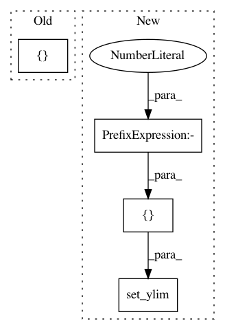

1d62b0c431c821671ef8f251d14cc8ae79b93c76,examples/ensemble/plot_balance_cascade.py,,,#,18
Before Change
// Generate the dataset
X, y = make_classification(n_classes=2, class_sep=2, weights=[0.1, 0.9],
n_informative=3, n_redundant=1, flip_y=0,
n_features=20, n_clusters_per_class=1,
n_samples=5000, random_state=10)
After Change
ax.spines["left"].set_position(("outward", 10))
ax.spines["bottom"].set_position(("outward", 10))
ax.set_xlim([-6, 8])
ax.set_ylim([-6, 6])
ax.legend()
plt.tight_layout()
plt.show()
In pattern: SUPERPATTERN
Frequency: 3
Non-data size: 4
Instances
Project Name: scikit-learn-contrib/imbalanced-learn
Commit Name: 1d62b0c431c821671ef8f251d14cc8ae79b93c76
Time: 2017-03-30
Author: g.lemaitre58@gmail.com
File Name: examples/ensemble/plot_balance_cascade.py
Class Name:
Method Name:
Project Name: scikit-learn-contrib/imbalanced-learn
Commit Name: 1d62b0c431c821671ef8f251d14cc8ae79b93c76
Time: 2017-03-30
Author: g.lemaitre58@gmail.com
File Name: examples/ensemble/plot_easy_ensemble.py
Class Name:
Method Name:
Project Name: automl/ParameterImportance
Commit Name: 96261a1509611e25510f1f3b66b6e44962a64361
Time: 2018-01-08
Author: biedenka@informatik.uni-freiburg.de
File Name: pimp/evaluator/incumbent_neighborhood.py
Class Name: IncNeighbor
Method Name: plot_result